SIGA CORRETAMENTE OS PASSOS A SEGUIR E NÃO SOFRA MUITO (eu espero)
1 - Digite o seu dominio desejado em: "Encontrar um novo domínio grátis".
2 - Clique em: "verificar disponibilidade".
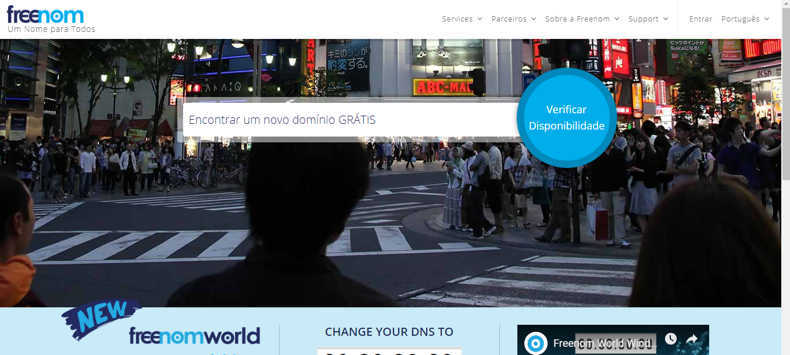
3 - Escolha o seu dominio e click em: "Get it Now".
4 - Em seguida click em: "Checkout".
OBS: Não escolha o domínio ".TK" pois ele foi banido.
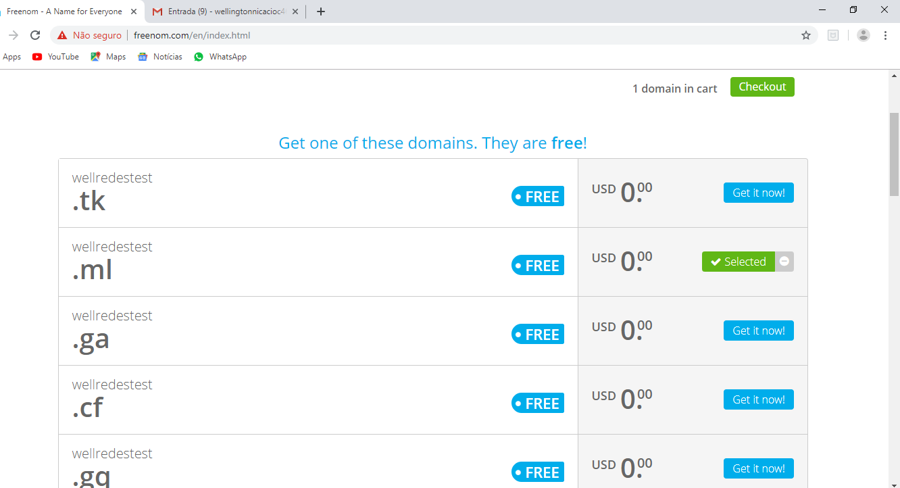
5 - prencha essa ficha com seu dados.
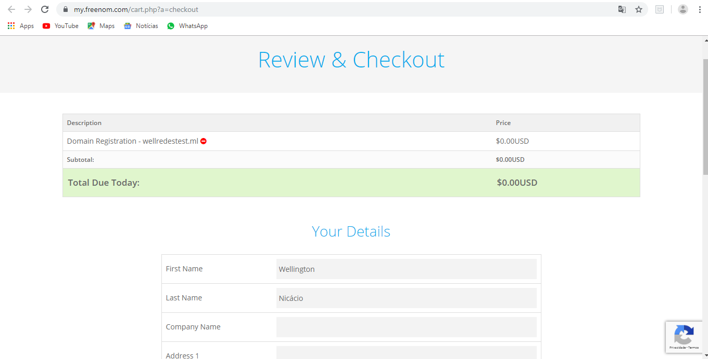
6 - Marque a caixa de termos e compromisso e em seguida click em: "Complete Order".
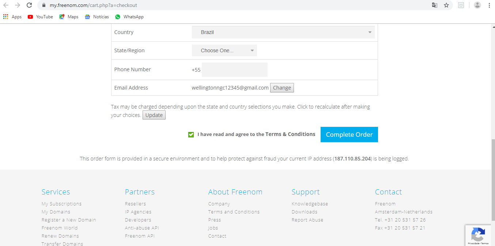
7 - Verifique no seu email que foi digitado anteriormente na ficha de dados.
8 - Click no link de redirecionamento e você chegará nessa página.
9 - Click em: "services", em seguida em: "My domains".
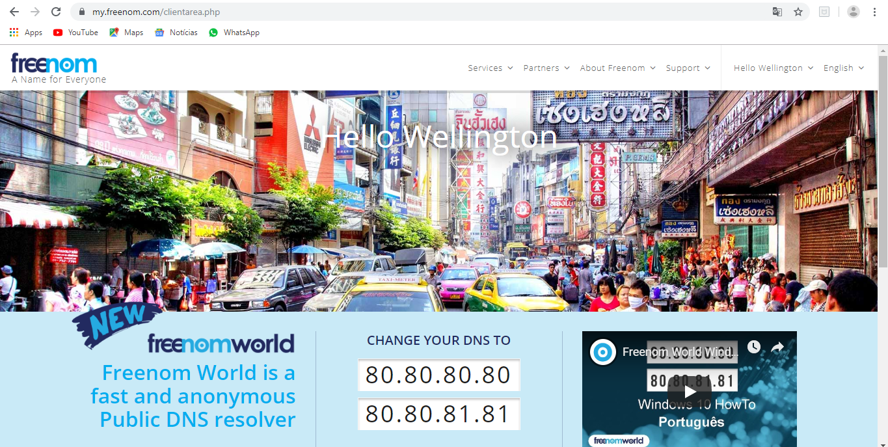
10 - Click em: "Manage Domain".
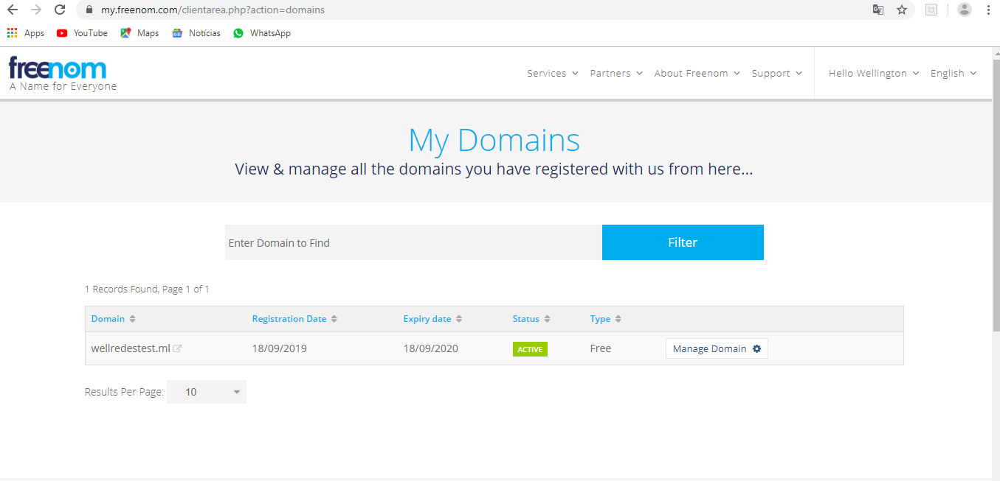
11 - Click em: "Management tools".
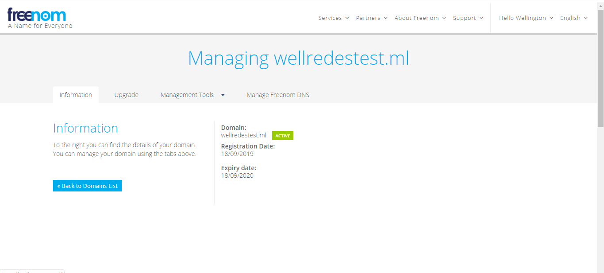
12 - Click em: "Nameservers".
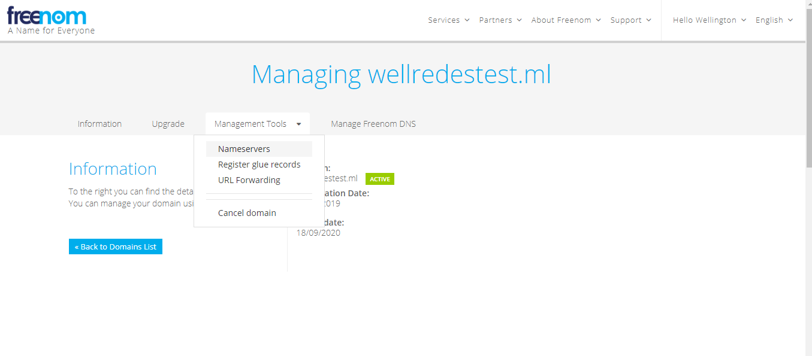
13 - Abra uma nova guia e entre no InfinityFree (Não feixe a anterior).
14 - Faça login caso tenha uma conta.
15 - Caso não, click em: "Register Now".
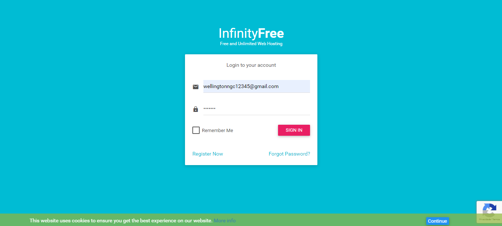
16 - Click em: "New Account".
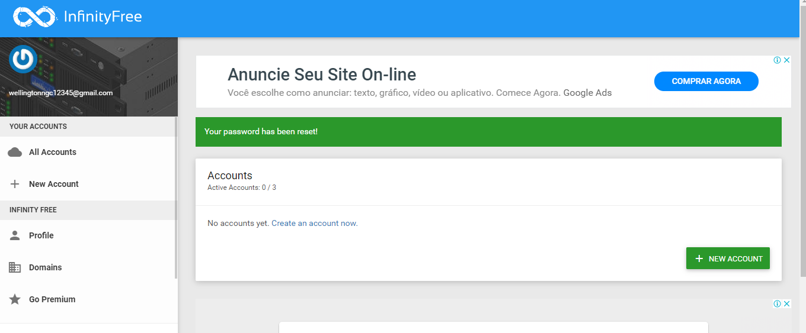
17 - Click em: "Use a custom domain".
18 - Pegue o dominio que voçê criou no FreeNom (no meu caso: wellredestest.ml) em seguida insira ele no local predefinido.
19 - Click em: "Learn more".
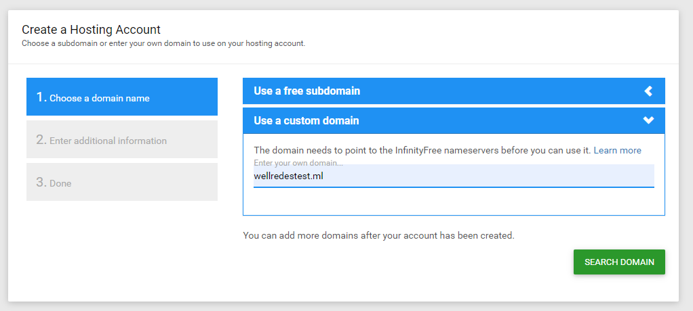
20 - Na guia que você deixou aberta do FreeNom, apos você ter feito o passo 12 (volte se você não lembra que passo é esse), click em: "use custom Nameservers" em seguida aparece essa tela com 5 names servers.
21 - Acesse a página que carregou após você clickar em: "Learn more" (passo 19).
22 - Copie um a um e cole os Nameservers do InfinityFree no FreeNom, guia que você estava no passo 20.
OBS: Vc deve fazer o passo 21, coletar os Nameservers e colar na guia do passo 20.
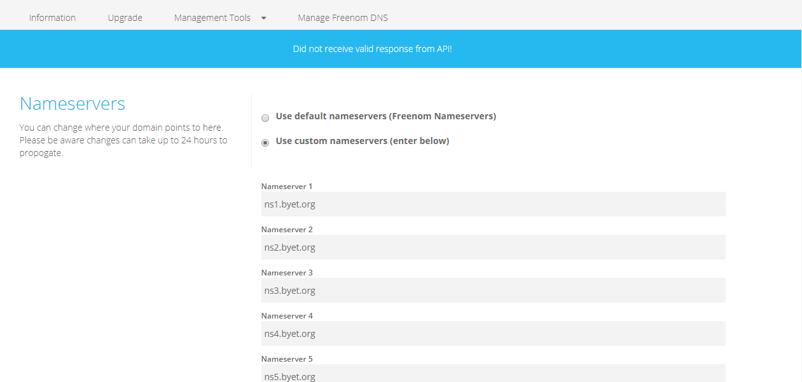
23 - Click em: "Change Nameservers".
24 - Espere carregar a nova página e já pode sair do FreeNom (ou fechar a guia).
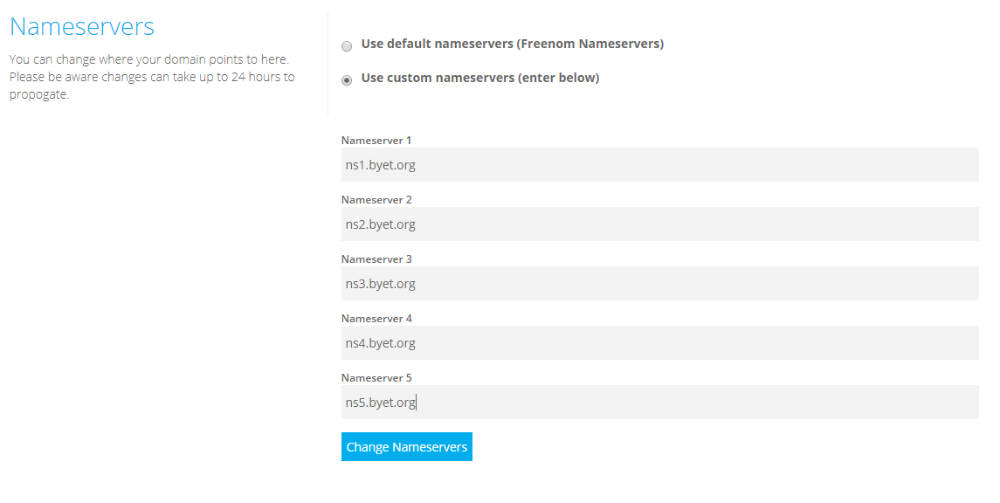
25 - Apos alterar os Nameservers do freenom, use a guia do passo 17 e click em: "search domain".
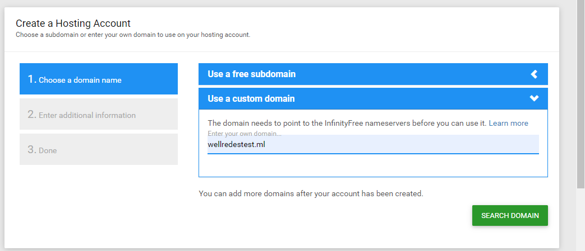
26 - Click em: "Account Password" e digite sua senha de login do InfinityFree.
27 - Click em: "Create Account".
28 - caso dê algum erro, espere alguns minutos e tente novamente, pois o freenom ainda pode estar configurando o Nameserver.
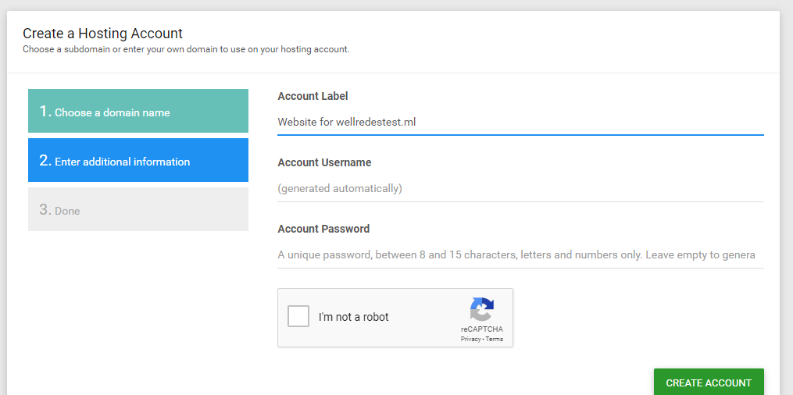
29 - Click em: "Open control panel".
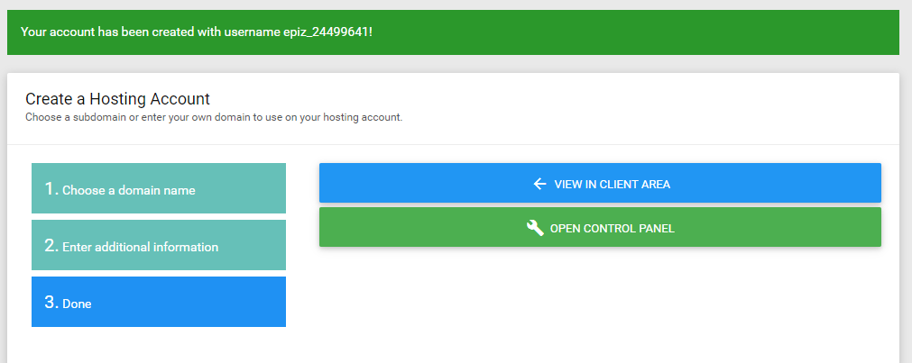
30 - Click em: "I disapprove".

31 - abra uma nova guia e pesquise por cliente ftp online.
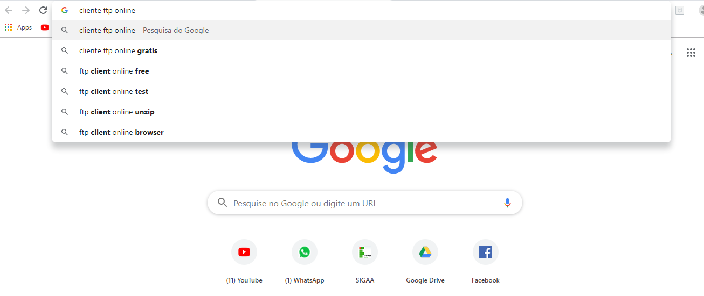
32 - entre nesse link.
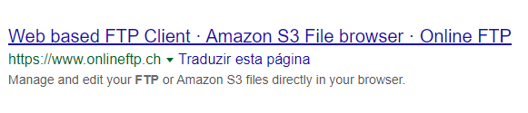
33 - entre na sua conta recem criada no InfinityFree e copie os dados do ftp para esse Site.
OBS: Caso fique dando erro de conecção, entre em seu cpanel, procure o gerenciador de arquivos do host click nele, entre na pagina de redirecionamento e modifique a permissão da pasta htdocs, nela marque todas as opções da terceira linha, salve em: "ok" e saia da página.
34 - Click em: "login".
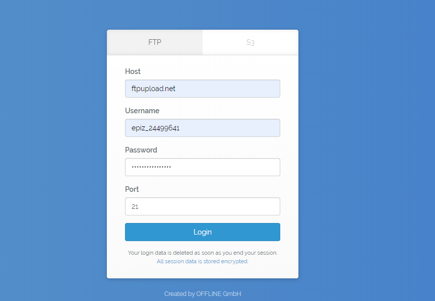
35 - Na sua conta os dados Ftp apareceram assim.
36 - Não seja burro como eu na hora de copiar a senha, click em: "Show/hide" copie e cole no seu cliente ftp.
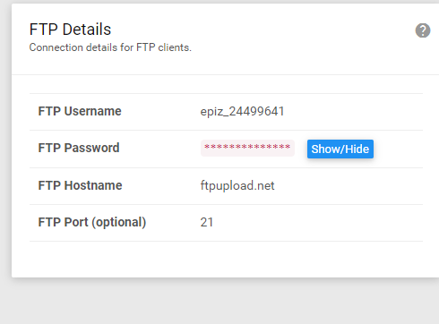
37 - Apos ter logado no cliente ftp, click na pasta htdocs.
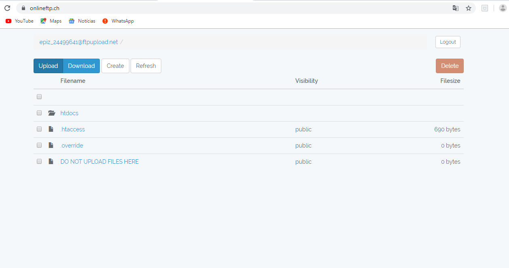
38 - click em: "Upload" e em seguida selecione os ARQUIVOS que deseja colocar no site.
39 - Click em: "ok" deixe fazer upload e depois faça logout.
40 - Para inserir novos arquivos ou deletar algum, retpita o procedimento desde o passo 33.
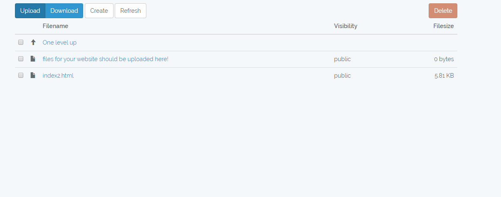